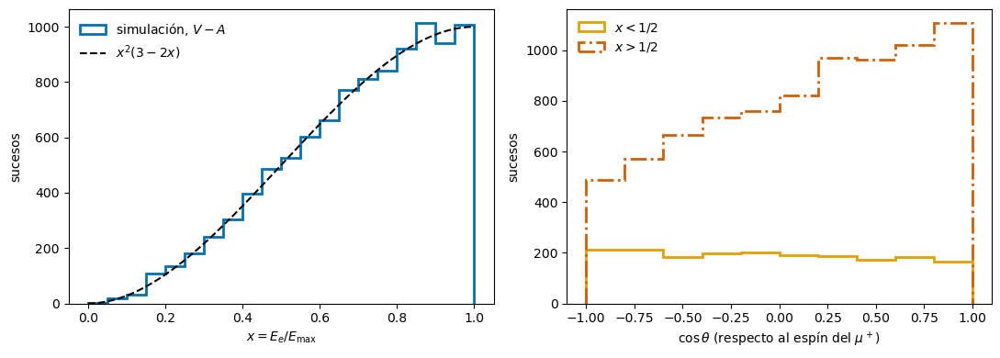
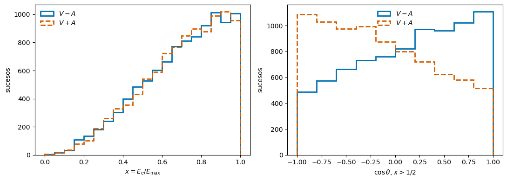

La paridad se rompe en la desintegración del muón#
Boletín IV, ejercicio 10 (guiado): \(\mu^+ \to e^+ + \nu_e + \bar{\nu}_\mu\)#
Jose A. Hernando
Departamento de Física de Partículas. Universidade de Santiago de Compostela
# Configuración e imports
%matplotlib inline
import numpy as np
import matplotlib.pyplot as plt
# Colores Okabe-Ito (legibles con daltonismo), y además estilos de línea distintos
AZUL, NARANJA, BERMELLON, VERDE = '#0072B2', '#E69F00', '#D55E00', '#009E73'
rng = np.random.default_rng(1957) # semilla fija: todos obtenemos los mismos números
Objetivos#
Usar la helicidad de los neutrinos y la quiralidad del positrón (\(V - A\)) para predecir hacia dónde sale el \(e^+\) (ejercicios 6–9 del boletín).
Simular la desintegración con la distribución de Michel, por aceptación-rechazo.
Medir la asimetría delante-atrás y, con ella, el parámetro \(\xi\) que mide la violación de la paridad.
Ver qué observable distingue \(V - A\) de \(V + A\) y cuál no.
La teoría está en leptones, sección 2 (el experimento de Wu y los miradores Los parámetros de Michel y Otro experimento de Wu, sin núcleos).
El experimento#
En 1957, a la vez que Wu, R. Garwin, L. Lederman y M. Weinrich pararon en un bloque de carbono los \(\mu^+\) de \(\pi^+ \to \mu^+ + \nu_\mu\) y contaron los positrones de \(\mu^+ \to e^+ + \nu_e + \bar{\nu}_\mu\) en función del ángulo. Los muones conservan su polarización mientras se paran.
Despreciando la masa del electrón, con \(x = E_e/E_{\max}\), \(E_{\max} = m_\mu/2 = 52.8\) MeV, y \(\theta\) el ángulo entre el \(e^+\) y el espín del \(\mu^+\), la teoría \(V - A\) predice
con \(\xi = +1\). Con \(V + A\) sería \(\xi = -1\), y si la interacción conservase la paridad, \(\xi = 0\): la imagen especular (\(\theta \to \pi - \theta\)) sería igual de probable.
(a) y (b) Con lápiz y papel: las helicidades#
[>] Taller — ¿Hacia dónde sale el positrón?
(a) El pión tiene espín \(0\) y el \(\nu_\mu\) helicidad negativa. En el reposo del pión, ¿hacia dónde apunta el espín del \(\mu^+\) respecto a su momento? ¿Qué helicidad tiene?
(b) En el extremo del espectro, \(x = 1\), el \(e^+\) lleva el máximo momento: los dos neutrinos salen juntos, en sentido opuesto. ¿Cuánto suman sus espines? El \(e^+\) de \(V - A\) es un antifermión a derechas (ext-quiral, sección 2.5); sin masa, ¿qué helicidad tiene? ¿Hacia dónde sale entonces respecto al espín del \(\mu^+\)?
Comprueba que la fórmula da \(1 + \cos\theta\) en \(x = 1\). ¿Cuántos positrones salen en \(\theta = \pi\)?
Solución
El \(\mu^+\) y el \(\nu_\mu\) salen en sentidos opuestos, y sus espines tienen que sumar \(0\) a lo largo de esa dirección (el momento angular orbital no tiene componente a lo largo del momento). El \(\nu_\mu\) tiene el espín opuesto a su momento; el \(\mu^+\), opuesto al del \(\nu_\mu\), apunta en el sentido del momento del \(\nu_\mu\), es decir, opuesto al momento del \(\mu^+\): helicidad negativa. (Para un antifermión de \(V - A\) es la helicidad «equivocada»: solo es posible porque el muón tiene masa. Es la supresión por helicidad de leptones, sección 2.8.)
El \(\nu_e\) tiene helicidad \(-\) y el \(\bar\nu_\mu\), \(+\). Si van en el mismo sentido, sus espines son opuestos y suman \(0\). El espín \(\frac12\) del \(\mu^+\) lo tiene que llevar entero el \(e^+\), en la misma dirección. El \(e^+\) a derechas y sin masa tiene helicidad \(+\): su momento apunta como su espín, es decir, como el espín del \(\mu^+\). Sale hacia delante, \(\theta = 0\).
En \(x = 1\), \((3 - 2) + \xi(2 - 1)\cos\theta = 1 + \cos\theta\) con \(\xi = 1\): es máximo en \(\theta = 0\) y nulo en \(\theta = \pi\). Con \(V + A\) (\(\xi = -1\)) sería al revés.
(c) La asimetría delante-atrás#
[>] Taller — Integrar en la energía
Integra la distribución en \(x\) entre \(0\) y \(1\) y comprueba que \(\dfrac{\mathrm{d}\Gamma}{\mathrm{d}\cos\theta} \propto 1 + \dfrac{\xi}{3}\cos\theta\).
Define \(N_F\) (positrones con \(\cos\theta > 0\)) y \(N_B\) (con \(\cos\theta < 0\)). Demuestra que la asimetría \(A_{FB} = (N_F - N_B)/(N_F + N_B)\) vale \(\xi/6\).
Solución
\(\int_0^1 x^2(3 - 2x)\,\mathrm{d}x = 1 - \frac12 = \frac12\) y \(\int_0^1 x^2(2x - 1)\,\mathrm{d}x = \frac12 - \frac13 = \frac16\). Luego \(\mathrm{d}\Gamma/\mathrm{d}\cos\theta \propto \frac12 + \frac{\xi}{6}\cos\theta = \frac12\left(1 + \frac{\xi}{3}\cos\theta\right)\).
Con \(1 + a\cos\theta\): \(N_F \propto \int_0^1 (1 + a c)\,\mathrm{d}c = 1 + \frac{a}{2}\) y \(N_B \propto 1 - \frac{a}{2}\), así que \(A_{FB} = \frac{a}{2} = \frac{\xi}{6}\). Integrada, la asimetría es pequeña: los positrones de baja energía van ligeramente hacia atrás y diluyen la de los rápidos.
(d) La simulación#
Aceptación-rechazo. Para generar puntos \((x, \cos\theta)\) con densidad \(f(x, \cos\theta)\), se generan uniformes en el rectángulo \([0, 1] \times [-1, 1]\) y una altura \(u\) uniforme en \([0, f_{\max}]\), y se aceptan los que quedan por debajo, \(u < f\). Aquí \(f_{\max} = 2\) (en \(x = 1\), \(\cos\theta = \xi\)).
def genera(n, xi):
# n desintegraciones (x, cos theta) con d2G/dx dcos ∝ x^2 [(3 - 2x) + xi (2x - 1) cos]
xs, cs = [], []
while len(xs) < n:
x = rng.uniform(0, 1, n)
c = rng.uniform(-1, 1, n)
f = x**2 * ((3 - 2*x) + xi*(2*x - 1)*c)
ok = rng.uniform(0, 2, n) < f # f <= 2 en todo el dominio si |xi| <= 1
xs.extend(x[ok]); cs.extend(c[ok])
return np.array(xs[:n]), np.array(cs[:n])
def asimetria(c):
# A_FB y su error binomial, sqrt((1 - A^2)/N)
n = len(c)
a = (np.sum(c > 0) - np.sum(c < 0)) / n
return a, np.sqrt((1 - a**2) / n)
[>] Taller — Simula 10 000 desintegraciones
Genera \(N = 10^4\) desintegraciones con \(\xi = 1\). ¿Qué fracción de las propuestas se acepta? ¿Por qué no importa para el resultado?
Dibuja el espectro en \(x\) y compáralo con \(x^2(3 - 2x)\).
Dibuja la distribución en \(\cos\theta\) por separado para \(x < \frac12\) y \(x > \frac12\). ¿Por qué cambia de signo la asimetría? Calcula la pendiente esperada en cada caso.
Mide \(A_{FB}\) con todos los sucesos y deduce \(\xi = 6A_{FB}\) con su error.
¿Cuántas desintegraciones hacen falta para excluir que se conserva la paridad (\(\xi = 0\)) a \(5\sigma\)? ¿Y para medir \(\xi\) con un 1 % de error?
N = 10_000
x, c = genera(N, xi=1)
fig, (a1, a2) = plt.subplots(1, 2, figsize=(11, 4))
bins = np.linspace(0, 1, 21)
a1.hist(x, bins, histtype='step', color=AZUL, lw=2, label='simulación, $V - A$')
xx = np.linspace(0, 1, 200)
a1.plot(xx, N*(bins[1] - bins[0])/0.5 * xx**2*(3 - 2*xx), 'k--', label=r'$x^2(3 - 2x)$')
a1.set_xlabel(r'$x = E_e/E_{\max}$'); a1.set_ylabel('sucesos'); a1.legend(frameon=False)
bc = np.linspace(-1, 1, 11)
for sel, col, ls, nombre in [(x < 0.5, NARANJA, '-', 'x < 1/2'), (x >= 0.5, BERMELLON, '-.', 'x > 1/2')]:
a2.hist(c[sel], bc, histtype='step', color=col, lw=2, ls=ls, label='$' + nombre + '$')
a, s = asimetria(c[sel])
print('{:8s}: {:5d} sucesos, A_FB = {:+.3f} ± {:.3f}'.format(nombre, sel.sum(), a, s))
a2.set_xlabel(r'$\cos\theta$ (respecto al espín del $\mu^+$)'); a2.set_ylabel('sucesos')
a2.set_ylim(0, None); a2.legend(frameon=False, loc='upper left')
plt.tight_layout(); plt.show()
a, s = asimetria(c)
print('todos : A_FB = {:.3f} ± {:.3f} -> xi = {:.2f} ± {:.2f}'.format(a, s, 6*a, 6*s))
x < 1/2 : 1902 sucesos, A_FB = -0.058 ± 0.023
x > 1/2 : 8098 sucesos, A_FB = +0.205 ± 0.011

todos : A_FB = 0.155 ± 0.010 -> xi = 0.93 ± 0.06
Solución
La eficiencia es el volumen bajo \(f\) entre el de la caja: \(\frac{\int f}{2 \times 2} = \frac{2 \times \frac12}{4} = 25\,\%\) (la integral en \(\cos\theta\) da \(2\), y en \(x\), \(\frac12\)). Solo cuesta tiempo: los sucesos aceptados siguen la distribución \(f\) igual.
El espectro sigue \(x^2(3 - 2x)\): crece hasta el extremo, \(x = 1\). El 81 % de los positrones tiene \(x > \frac12\).
Integrando en cada intervalo, la pendiente \(a\) de \(1 + a\cos\theta\) es \(a = \xi\,\frac{\int x^2(2x - 1)}{\int x^2(3 - 2x)}\): \(-0.11\) para \(x < \frac12\) (\(A_{FB} = a/2 = -0.06\)) y \(+0.44\) para \(x > \frac12\) (\(A_{FB} = +0.22\)). El factor \((2x - 1)\) cambia de signo en \(x = \frac12\): los positrones lentos salen ligeramente hacia atrás. El argumento de (b) solo vale cerca de \(x = 1\): con \(x \to 0\) los dos neutrinos salen opuestos, sus espines se suman, y el \(e^+\) ya no tiene por qué llevar el del muón. Con esta semilla, \(A_{FB} = -0.06 \pm 0.02\) y \(+0.21 \pm 0.01\).
Con esta semilla, \(A_{FB} = 0.155 \pm 0.010\), es decir, \(\xi = 0.93 \pm 0.06\): compatible con \(1\) (a \(1.2\sigma\)). Con otra semilla saldrá otro número; la dispersión entre semillas es el error, \(\pm 0.06\).
Con \(A = \frac16\) y \(\sigma_A \simeq 1/\sqrt N\): \(A\sqrt N = 5\) da \(N = 900\). Para \(\sigma_\xi/\xi = 6\sigma_A = 0.01\), \(N \simeq (6/0.01)^2 \simeq 3.6\times10^5\). Garwin, Lederman y Weinrich vieron la asimetría en unos días; los experimentos actuales (TWIST, en TRIUMF) han acumulado \(\sim 10^{10}\) desintegraciones.
(e) \(V - A\) o \(V + A\)#
[>] Taller — ¿Qué observable los distingue?
Genera otras \(10^4\) desintegraciones con \(\xi = -1\) (\(V + A\)).
Compara los dos espectros en \(x\). ¿Los distingue?
Compara las distribuciones en \(\cos\theta\) para \(x > \frac12\). ¿Y ahora?
Con \(\xi = 0\), ¿cómo serían? ¿Qué mide entonces \(\xi\)?
x2, c2 = genera(N, xi=-1)
fig, (a1, a2) = plt.subplots(1, 2, figsize=(11, 4))
a1.hist(x, bins, histtype='step', color=AZUL, lw=2, label='$V - A$')
a1.hist(x2, bins, histtype='step', color=BERMELLON, lw=2, ls='--', label='$V + A$')
a1.set_xlabel(r'$x = E_e/E_{\max}$'); a1.set_ylabel('sucesos'); a1.legend(frameon=False)
a2.hist(c[x >= 0.5], bc, histtype='step', color=AZUL, lw=2, label='$V - A$')
a2.hist(c2[x2 >= 0.5], bc, histtype='step', color=BERMELLON, lw=2, ls='--', label='$V + A$')
a2.set_xlabel(r'$\cos\theta$, $x > 1/2$'); a2.set_ylabel('sucesos')
a2.set_ylim(0, None); a2.legend(frameon=False, loc='upper center')
plt.tight_layout(); plt.show()
a, s = asimetria(c2)
print('V + A: A_FB = {:.3f} ± {:.3f} -> xi = {:.2f} ± {:.2f}'.format(a, s, 6*a, 6*s))

V + A: A_FB = -0.167 ± 0.010 -> xi = -1.00 ± 0.06
Solución
y 2. Los espectros son iguales salvo fluctuaciones: integrado en el ángulo, el término en \(\xi\) desaparece y queda \(x^2(3 - 2x)\) en los dos casos. El espectro no sabe nada de la paridad. Es lo que dice el mirador de Michel: \(\rho = \frac34\) en los dos.
La distribución angular es la imagen especular: con \(V + A\) los positrones rápidos salen en contra del espín del muón (\(\xi = -1\), \(A_{FB} \simeq -0.17\)). Con \(V + A\) el \(e^+\) saldría a izquierdas, y en \(x = 1\) tendría que salir hacia atrás.
Con \(\xi = 0\) la distribución sería plana en \(\cos\theta\) para cualquier \(x\): tantos positrones hacia delante como hacia atrás. \(\xi\) mide la violación de la paridad: lo que cambia al mirar el experimento en un espejo (\(\cos\theta \to -\cos\theta\), porque el espín, un vector axial, no se invierte y el momento sí). Se mide \(\xi = 1.000 \pm 0.001\): la violación es máxima, como en el experimento de Wu.
Resumen#
La helicidad negativa del \(\nu_\mu\) polariza los \(\mu^+\) del pión; la del \(\nu_e\) y el \(\bar\nu_\mu\), y el \(e^+\) a derechas de \(V - A\), hacen que los positrones rápidos salgan a favor del espín del muón.
Simulado con la distribución de Michel, \(A_{FB} = \xi/6\): con \(10^4\) desintegraciones, \(\xi = 0.93 \pm 0.06\). Bastan unas 900 para excluir la conservación de la paridad a \(5\sigma\).
El espectro de energía es el mismo con \(V - A\) y con \(V + A\); solo la distribución angular respecto al espín distingue una de otra. Se mide \(\xi = 1\): la paridad se viola de forma máxima.
[+] Mirador. En el experimento de Garwin, Lederman y Weinrich, un campo magnético hacía precesar el espín de los muones parados, y el contador, fijo, veía oscilar el número de positrones con la frecuencia de precesión. Así midieron a la vez la asimetría y el momento magnético del muón, \(g \simeq 2\). Es el origen de los experimentos de \(g - 2\).